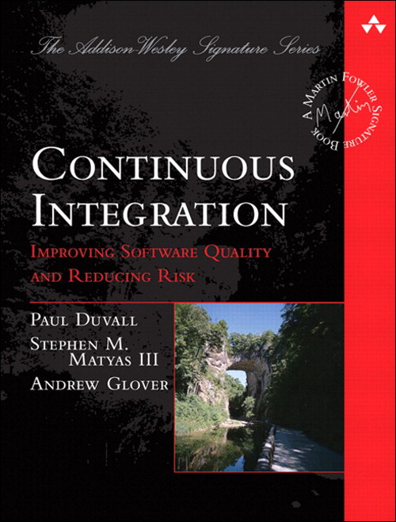

Testimony
(about testing)
Presented by Milan Popović / @komita1981
Me
PHP developer
Work for Navus Consulting GMBH
I like to learn and share knowledge
Active member of PHP Srbija
What is main property of bad code?
It's untestable
Kent Beck's rules of simple code
-
1. Runs all the tests
-
2. Contains no duplication
-
3. Express the intent of programmer
-
4. Minimizes the number of classes and methods
Given in order of importance
No software engineers release even the tiniest change without testing, except the very confident and the very sloppy. - Kent Beck
The degree to which you know how your software behaves is the degree to which you have accurately tested it. - Max Kanat-Alexander
What is testing?
Testing is the activity of finding out whether a piece of code produces the intended behavior
What do people think about testing?


Time consuming
Testing is hard
Steep learning curve
Don’t make anybody any money
What testing really is?
Fundamental part of professional software development
Prove you've done your work
An insurance that the system works
Reduce number of bugs
Help you make better code design - easier to maintain - facilitating change
What testing really is?
Ensures stable, long lasting application
Verify correctness much faster and less troublesome
Improve understanding how clients are going to use your code
Enhance security
Provide free documentation
Cost of not testing or late testing
Testing is expensive (event up to 40% of project's budget)
Not testing is event more expensive
Cost of testing increases exponentially if happens later
If you deliver code without tests, it's legacy code
Why do so many developers not deliver tests with their code?
Habit is not established early
The consequence of not writing unit tests is delayed
The consequence is often suffered by other people, not the original author
Informational Conformity & Halo effect
What is to be tested?
EVERYTHING
To be more precise
EVERYTHING THAT COULD BREAK YOUR APP
DDT vs TDD vs TFD vs BDD vs Whatever

IBM & Microsoft - TDD - 20-40% longer to complete but 40-90% fewer bugs in production
By 2022 it will be not be possible to get a professional programming job if you do not practice TDD routinely - Allan Kelly
State of mind
Levels, types and methods of software testing
Levels
Unit
Integration
System
Acceptance
Types
A/B
Acceptance
Accessibility
Alpha/Beta
Concurrent
Conformance and type
Types
Compatibility
Destructive
Development
Documentation
Functional vs Non Functional
Internationalization & Localization
Types
Installation
Performance
Regression
Smoke and Sanity
Security
Usability
Methods
Static
Dynamic

1. Try with writing tests after writing the code
2. When you get confidence try to write tests before the code
3. Treat test like your code - keep it "clean"
- Tests are clean if they are readable
- What make them readable is clarity, simplicity and density of expression
- Be descriptive about what you are testing
- Do not duplicate test code
- Do not make tests complex
4. Number of asserts in a test ought to be minimized
5. Use Virtual Environments

6. Use continuous integration server
When I say testing I mean AUTOMATED testing
Automated testing is key point for software quality and is preferred because of it's repeatability and easy of use
Manual testing is time consuming and boring allowed in some complex scenarios
Run tests often
7. Test Boundary Conditions
8. Use test saboteurs
Humbug
Infection
9. Use test coverage properly
A rule of the thumb for test coverage related to cyclomatic complexity is to have test cases equal in number to the cyclomatic complexity value.
Test branch coverage not only code coverage
sampleMethod()
{
if (a < 5 and b > 10){
return a + b;
}
return $a - $b;
}
10. Test before refactoring
11. Write unit tests for each bug you are going to fix
12. Think twice before using New Operators - new ClassName()
13. Think twice before using statics - SomeClass::someMethod()
14. Avoid endless "anding" - Breaking SRP
15. Avoid using switch-case often - use design patterns instead
16. Avoid using too many dependencies - max 4 dependencies
17. Avoid logic in constructor - only assign variables
17. Do not break Law of Demeter
$company->getOwner()->getAccount()->getBank()...
18. Do Not Mock What You Do not Own
19. Use data providers
/**
* @dataProvider getSuccessfulAddData
*/
public function testSuccessfulAdd($a, $b, $result)
{
$this->assertEquals($result,
$this->calculator->add($a, $b));
}
public function getSuccessfulAddData()
{
return [
['a' => 1, 'b' => 2, 'result' => 3],
['a' => 2, 'b' => 1, 'result' => 3],
['a' => 0, 'b' => 1, 'result' => 1],
['a' => 1, 'b' => 0, 'result' => 1],
];
}
20. Respect 3A of Unit testing
Arrange objects, creating and setting them up as necessary.
Act on an object
Assert that something is as expected
21.

22. Programming by Wishful Thinking
23. Use test doubles properly
Dummy
Fake
Stub
Mock
Spy
24. Before asserting through loop use assertCount
25. Do not lie about your real dependencies - use DI
Don't look for things! Ask for things!
26. Smoke testing
Quick check if there are any problems
Check if application is running
Ping an important API endpoint
27. Add time for testing in your estimates
- 30% testing
- 30% implementation
- 10% logging and metrics
- 30% refactoring
28. If you provide API use documentation testing
Dredd
Supports Swagger & API Blueprint
29. Run tests in parallel
30. Weeks of programming can save you hours of planning and writing tests

Once you start testing You wont want to write code without tests again
You are not good developer if you are not good tester
Developers starts producing better code
Testing makes developers complacent
Writing code that is testable encourages best practices - such as SOLID
Quality is everyone’s responsibility — especially ours - developer’s
Testing is fun :-)




f u cn rd ths, u cn gt a gd jb n sftwr tstng
Resources
- Php tests tips
- Unit test prez
- Cost of tdd
- Sebastian Bergmann in Atlanta
- F.I.R.S.T Principles of Unit Testing
- First principles
- Prag prog blog
- How Often Should You Run Your JUnit Tests?
- Daed blog
- Salesforce blog
- Google testing blog
- Unit testing blog
- Testing doubles
- Martin Fowler about XUnit
- Notes on designing through mocking
- Wishful Programming
- That's Not Yours
- Testing is dead
- Software Testing
- Software Testing
- Software Testing Concepts
{kind=link}
{kind=link}
{kind=link}
{kind=link}
{kind=link}
{kind=link}
{kind=link}
{kind=link}
{kind=link}
{kind=link}
{kind=link}
{kind=link}
{kind=link}
{kind=link}